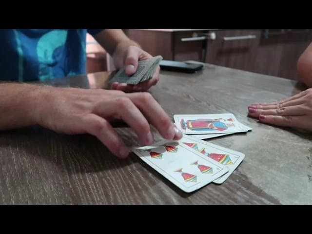

Tutorial: Cómo jugar a Siete y Medio
Reglas Básicas
Siete y Medio es un juego de cartas tradicional español que se juega con una baraja española de 40 cartas. El objetivo del juego es conseguir una puntuación lo más cercana posible a 7.5 sin pasarse.
Cómo Jugar
- 1. Reparto: Cada jugador recibe una carta inicial. Las cartas tienen el siguiente valor:
- Del 1 al 7: Tienen su valor numérico.
- Figuras (Sota, Caballo, Rey): Valen 0.5 puntos.
- 2. Turno de los jugadores: En su turno, cada jugador decide si quiere pedir otra carta ("planto") o quedarse con las que ya tiene ("me planto").
- 3. Objetivo: El objetivo es acercarse lo máximo posible a 7.5 sin pasarse. Si un jugador se pasa, queda eliminado de la ronda.
- 4. Fin de la ronda: Cuando todos los jugadores se plantan o se pasan, se comparan los resultados y gana quien esté más cerca de 7.5.

Consejos Estratégicos
Recuerda que el rey del mazo es el "banca" y tiene ventaja en caso de empate. No te arriesgues demasiado si tienes una puntuación alta cerca de 7.5.